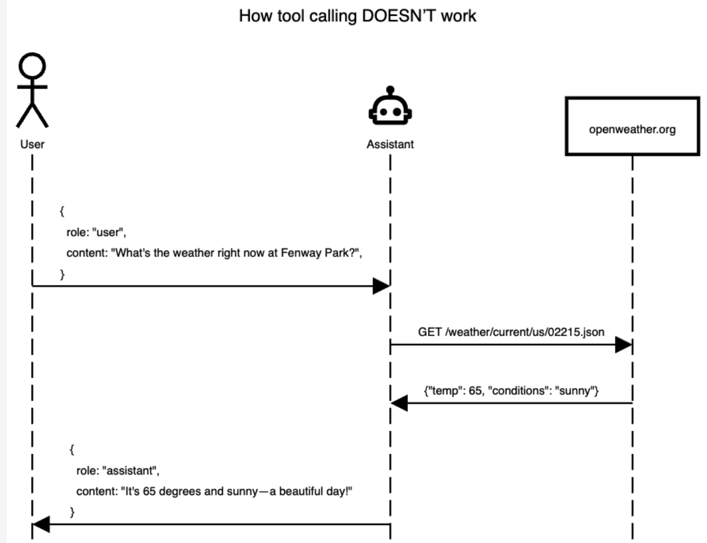
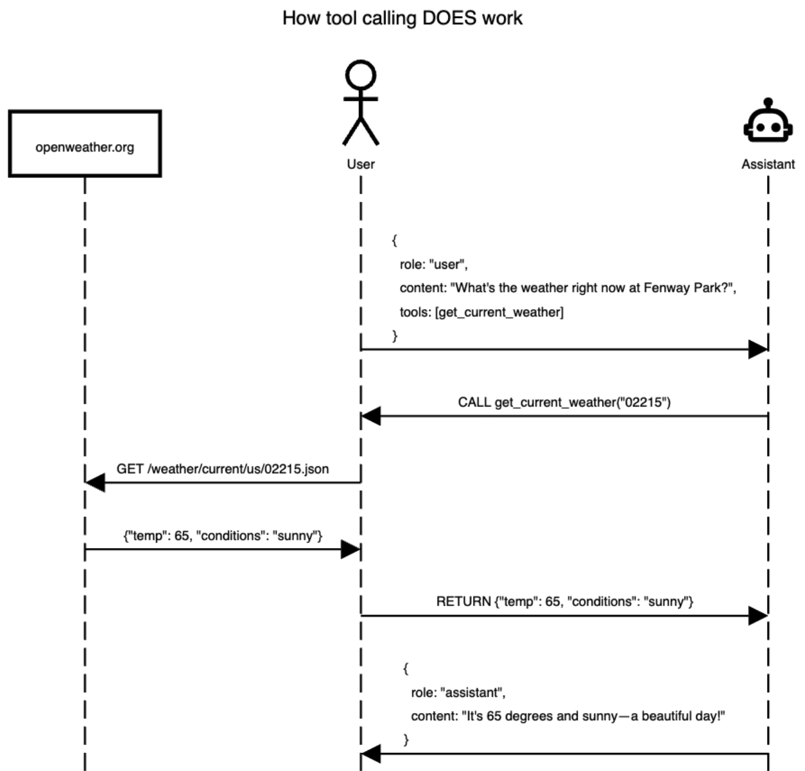

{'lat': 40.7127281, 'lon': -74.0060152}Allows LLMs to interact with other systems
Supported by most of the newest LLMs, but not all
Sounds complicated? Scary? It’s not too bad, actually…
Reference: https://jcheng5.github.io/llm-quickstart/quickstart.html#/how-it-works


Python Chatlas
import chatlas as clt
# doc strings and type hints provide tool context
def capital_finder(location: str) -> str:
"""Sets the capital of the moon as NYC"""
if location.lower() == "moon":
return "NYC"
chat = clt.ChatAnthropic()
chat.register_tool(capital_finder)
chat.chat("what is the capital of the moon?")I'll use the capital_finder function to get information about the capital of the moon.
# 🔧 tool request (toolu_01NFACspp5dLPMeTN7FNfvyB)
capital_finder(location=moon)
# ✅ tool result (toolu_01NFACspp5dLPMeTN7FNfvyB)
NYC
According to the capital_finder function, the capital of the moon is NYC (New York City).
Of course, this is not factually accurate in reality - the moon doesn't actually have a capital city or any cities at all, as it's an
uninhabited celestial body. This appears to be a fictional or hypothetical response from the function.R Ellmer
library(ellmer)
chat <- chat_openai()
#' Sets the capital of the moon as NYC
capital_finder <- function(location) {
if (location == "moon") {
return("NYC")
}
}
capital_finder <- ellmer::tool(
capital_finder,
description = "Sets the capital of moon as NYC",
arguments = list(
location = type_string("location to look up")
)
)
chat$register_tool(capital_finder)
chat$chat("what is the capital of the moon?")◯ [tool call] capital_finder(location = "moon")
● #> NYC
The capital of the Moon is NYC.To ask the LLM about the weather in the current location we need to write a function that does a few things:
{'lat': 40.7127281, 'lon': -74.0060152}{'latitude': 40.710335,
'longitude': -73.99308,
'generationtime_ms': 0.09489059448242188,
'utc_offset_seconds': 0,
'timezone': 'GMT',
'timezone_abbreviation': 'GMT',
'elevation': 32.0,
'current_weather_units': {'time': 'iso8601',
'interval': 'seconds',
'temperature': '°C',
'windspeed': 'km/h',
'winddirection': '°',
'is_day': '',
'weathercode': 'wmo code'},
'current_weather': {'time': '2026-03-04T05:30',
'interval': 900,
'temperature': 1.1,
'windspeed': 2.5,
'winddirection': 270,
'is_day': 0,
'weathercode': 45}}library(httr)
library(ellmer)
library(dotenv)
# Load environment variables
load_dot_env()
# Define weather function
get_weather <- function(latitude, longitude) {
base_url <- "https://api.open-meteo.com/v1/forecast"
tryCatch(
{
response <- GET(
base_url,
query = list(
latitude = latitude,
longitude = longitude,
current = "temperature_2m,wind_speed_10m,relative_humidity_2m"
)
)
rawToChar(response$content)
},
error = function(e) {
paste("Error fetching weather data:", e$message)
}
)
}
# Create chat instance
chat <- chat_openai(
model = "gpt-4.1",
system_prompt = "You are a helpful assistant that can check the weather. Report results in imperial units."
)
# Register the weather tool
#
# Created using `ellmer::create_tool_def(get_weather)`
chat$register_tool(tool(
get_weather,
"Fetches weather information for a specified location given by latitude and
longitude.",
latitude = type_number(
"The latitude of the location for which weather information is requested."
),
longitude = type_number(
"The longitude of the location for which weather information is requested."
)
))
# Test the chat
chat$chat("What is the weather in Seattle?")"""Tool calling demo: LLM looks up weather via two registered tools.
Run: cd code/lecture06/demo02 && python chatlas-weather.py
"""
import requests
from chatlas import ChatGithub
# from chatlas import ChatAnthropic
from dotenv import load_dotenv
load_dotenv()
from get_coordinates import get_coordinates
from get_weather import get_weather
chat = ChatGithub(
model="gpt-4.1-mini", # or "gpt-4.1"
system_prompt=(
"You are a helpful assistant that can check the weather. "
"Report results in imperial units."
),
)
chat.register_tool(get_coordinates)
chat.register_tool(get_weather)
chat.chat("What is the weather in Seattle?")from chatlas import ChatAnthropic
from shiny.express import ui
from helper.get_coordinates import get_coordinates
from helper.get_weather import get_weather
chat_client = ChatAnthropic()
chat_client.register_tool(get_coordinates)
chat_client.register_tool(get_weather)
chat = ui.Chat(id="chat")
chat.ui(
messages=[
"Hello! I am a weather bot! Where would you like to get the weather form?"
]
)
@chat.on_user_submit
async def _(user_input: str):
response = await chat_client.stream_async(user_input, content="all")
await chat.append_message_stream(response)DSCI 532: Data Visualization 2 https://github.com/UBC-MDS/DSCI_532_vis-2_book